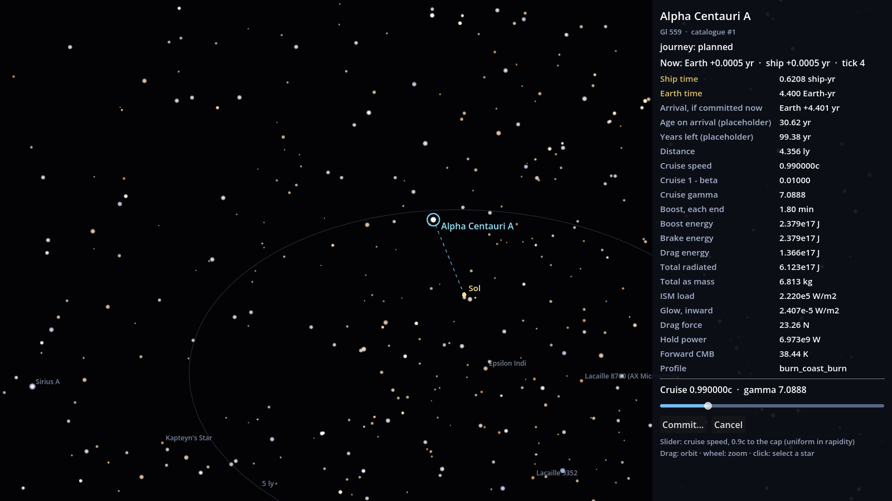
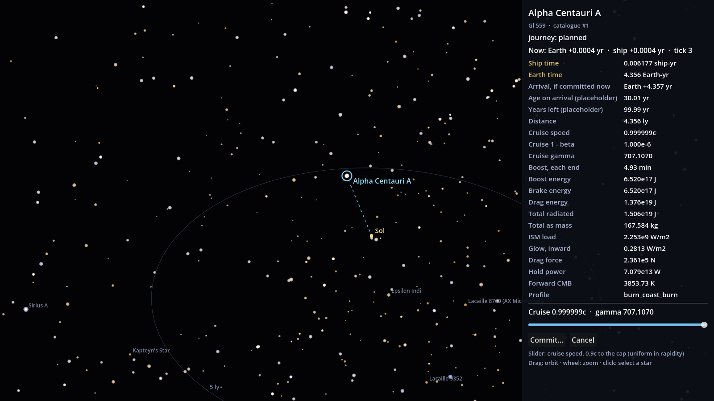

<title>Galaxy Map R1 Review</title>
<link rel="stylesheet" href="https://fonts.googleapis.com/css2?family=Fraunces:opsz,wght@9..144,500;9..144,650&family=IBM+Plex+Sans:wght@400;600&family=IBM+Plex+Mono:wght@400;500&display=swap">
<style>
/* Layout: one reading column; captures full-width; numbers in tabular mono tables. */
:root {
  --bg: #f3f4f7; --surface: #ffffff; --fg: #161a24; --muted: #5b6375; --rule: #d6dae3;
  --accent: #1f6fa8; --gold: #9a6b12; --warn-bg: #fff4dc; --warn-fg: #6b4a07;
  --display: "Fraunces", Georgia, serif; --body: "IBM Plex Sans", system-ui, sans-serif; --mono: "IBM Plex Mono", ui-monospace, monospace;
}
@media (prefers-color-scheme: dark) { :root:not([data-theme="light"]) {
  --bg: #0b0e15; --surface: #121722; --fg: #e4e8f1; --muted: #9aa3b6; --rule: #2a3142;
  --accent: #7cc4f2; --gold: #e3bc62; --warn-bg: #2b2210; --warn-fg: #f0d28c; color-scheme: dark } }
:root[data-theme="dark"] {
  --bg: #0b0e15; --surface: #121722; --fg: #e4e8f1; --muted: #9aa3b6; --rule: #2a3142;
  --accent: #7cc4f2; --gold: #e3bc62; --warn-bg: #2b2210; --warn-fg: #f0d28c; color-scheme: dark }
body { background: var(--bg); color: var(--fg); font: 16px/1.6 var(--body); }
main { max-width: 980px; margin: 0 auto; padding-inline: 16px; padding-block: 32px 64px; display: grid; gap: 28px; }
h1, h2 { font-family: var(--display); text-wrap: balance; line-height: 1.15; margin: 0; }
h1 { font-size: 2.2rem; font-weight: 650; }
h2 { font-size: 1.35rem; font-weight: 500; }
p { margin: 0; max-width: 68ch; }
section { display: grid; gap: 12px; min-width: 0; }
.eyebrow { font: 500 0.75rem var(--mono); letter-spacing: 0.08em; text-transform: uppercase; color: var(--muted); }
figure { margin: 0; display: grid; gap: 6px; }
figure img { width: 100%; border: 1px solid var(--rule); border-radius: 4px; display: block; }
figcaption { font-size: 0.85rem; color: var(--muted); }
.pair { display: grid; grid-template-columns: repeat(auto-fit, minmax(280px, 1fr)); gap: 16px; }
.tbl { overflow-x: auto; background: var(--surface); border: 1px solid var(--rule); border-radius: 4px; }
table { border-collapse: collapse; width: 100%; font-size: 0.92rem; }
th, td { padding: 8px 12px; text-align: left; border-bottom: 1px solid var(--rule); white-space: nowrap; }
th { font-weight: 600; color: var(--muted); font-size: 0.8rem; }
td.n { font: 0.92rem var(--mono); font-variant-numeric: tabular-nums; }
tr:last-child td { border-bottom: 0; }
tr.check td { color: var(--gold); }
.note { background: var(--warn-bg); color: var(--warn-fg); padding: 14px 16px; border-radius: 4px; display: grid; gap: 8px; }
ul { margin: 0; padding-left: 1.2em; display: grid; gap: 4px; max-width: 70ch; }
code { font: 0.9em var(--mono); }
a { color: var(--accent); }
</style>

<main>
  <header style="display:grid;gap:10px">
    <span class="eyebrow">Stapledon's Voyage · R1-M2-JOURNEY · M2.6a · ⏸ R1</span>
    <h1>Galaxy map and plan panel</h1>
    <p>Pick a star, choose a cruise speed, and read the simulation's plan. Every number on the panel is a field the AILANG sim sent; Godot only formats it. The clock keeps running while you plan (D-12), and the slider starts at 0.99c (D-14).</p>
  </header>

  <figure>
    
    <figcaption>α Cen A (catalogue Gl 559, index 1) at the 0.99c default. Rings mark 5 and 10 ly in the galactic plane.</figcaption>
  </figure>

  <section>
    <h2>One thing to decide: which α Cen distance</h2>
    <div class="note">
      <p>The catalogue puts α Cen A at <strong>4.35643 ly</strong> from Sol (its x, y, z are rounded to 0.01 ly). The design's check row uses <strong>4.37 ly</strong>. So the live map reads slightly shorter trips than the agreed check numbers. Both come straight from the sim; the formatting is the same.</p>
    </div>
    <div class="tbl"><table>
      <thead><tr><th>At 0.99c</th><th>Ship time</th><th>Earth time</th><th>Boost, each end</th><th>Total as mass</th></tr></thead>
      <tbody>
        <tr><td>Map: catalogue α Cen A, 4.35643 ly</td><td class="n">0.6208 ship-yr</td><td class="n">4.400 Earth-yr</td><td class="n">1.80 min</td><td class="n">6.813 kg</td></tr>
        <tr class="check"><td>Check row 2: 4.37 ly</td><td class="n">0.6227 ship-yr</td><td class="n">4.414 Earth-yr</td><td class="n">1.80 min</td><td class="n">6.818 kg</td></tr>
      </tbody>
    </table></div>
  </section>

  <section>
    <h2>The same star at the two ends of the slider</h2>
    <div class="pair">
      <figure><figcaption>0.9c: 2.110 ship-yr, 4.840 Earth-yr, 3.392 kg.</figcaption></figure>
      <figure><figcaption>Cap, 0.999999c: 0.006177 ship-yr (2.26 days), 4.356 Earth-yr, 167.6 kg.</figcaption></figure>
    </div>
    <div class="tbl"><table>
      <thead><tr><th>Panel line</th><th>0.9c</th><th>0.99c</th><th>Cap</th></tr></thead>
      <tbody>
        <tr><td>Ship time</td><td class="n">2.110 ship-yr</td><td class="n">0.6208 ship-yr</td><td class="n">0.006177 ship-yr</td></tr>
        <tr><td>Earth time</td><td class="n">4.840 Earth-yr</td><td class="n">4.400 Earth-yr</td><td class="n">4.356 Earth-yr</td></tr>
        <tr><td>Cruise gamma</td><td class="n">2.2942</td><td class="n">7.0888</td><td class="n">707.1070</td></tr>
        <tr><td>Boost, each end</td><td class="n">1.00 min</td><td class="n">1.80 min</td><td class="n">4.93 min</td></tr>
        <tr><td>Total radiated</td><td class="n">3.048e17 J</td><td class="n">6.123e17 J</td><td class="n">1.506e19 J</td></tr>
        <tr><td>Total as mass</td><td class="n">3.392 kg</td><td class="n">6.813 kg</td><td class="n">167.584 kg</td></tr>
        <tr><td>ISM load</td><td class="n">1.921e4 W/m2</td><td class="n">2.220e5 W/m2</td><td class="n">2.253e9 W/m2</td></tr>
        <tr><td>Drag force</td><td class="n">2.013 N</td><td class="n">23.26 N</td><td class="n">2.361e5 N</td></tr>
        <tr><td>Hold power</td><td class="n">6.036e8 W</td><td class="n">6.973e9 W</td><td class="n">7.079e13 W</td></tr>
        <tr><td>Forward CMB</td><td class="n">11.88 K</td><td class="n">38.44 K</td><td class="n">3853.73 K</td></tr>
      </tbody>
    </table></div>
    <p style="font-size:0.9rem;color:var(--muted)">Full dump, with each label's sim field and raw value: <code>docs/m2.6a/galaxy_map_panel.json</code>.</p>
  </section>

  <section>
    <h2>What to look at</h2>
    <ul>
      <li>Panel order: both clocks, arrival ("Earth +x yr, if committed now"), age on arrival and years left (placeholders until the crew model), then speed, energy, the interstellar medium and the forward CMB.</li>
      <li>Labels and units. Large numbers use <code>2.379e17</code> style; say if you want another notation.</li>
      <li>The slider runs evenly in rapidity, so 0.99c sits about a fifth of the way along and the cap is at the far end.</li>
      <li>Not in this build: the commit dialog with its 1.5 s hold and the transit readout (M2.6b), and star names beyond catalogue ids.</li>
    </ul>
    <p>Try it: <code>godot --path . -- --map</code> (or <code>--map=1</code> to open on α Cen A), or the <code>v0.2.0-m2-map</code> review build. Drag to orbit, scroll to zoom, click a star.</p>
  </section>
</main>
